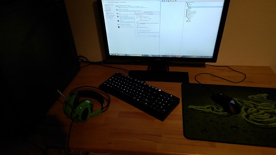

A propos
Ma configuration PC
Setup PC

Intel Core i5 3570K
Mémoire : 8 Go
Carte Vidéo : MSI GeForce GTX 660
Disque Dur : Seagate Barracuda 7200.14 SATA 6
Carte Mère : ASUS P8Z77-V LX
OS : Microsoft Windows 8 - 64 bits
Souris : Razer deathadder Chroma
Tapis de Souris : Razer Goliathus - Speed Edition
Clavier : Cooler Master QuickFire TK
Casque Audio : SteelSeries Siberia V2 - Green Edition
Présentation personnelle
Pseudo: L0skA
Age: 19 ans
Ville: Dunkerque
Rank: DMG/Eagle
Spécialité: Riffle
Expérience: 2ans de CS, 4ans de CSS, 2ans CSGO
Disponibilité NET: 7/7
Autres: Joueur sérieux avec une très bonne expérience de jeu ainsi qu'un bon TP recherche une team stable avec l'envie de progresser en compétition.
Profil steam:
ici
Retourner au menu principal